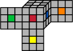

In this section, we will explore the following questions.
What does it mean to play?
What are the components of the Cube?
What are some of the elementary mathematical properties of the Cube?
Subsection1.1.1Thinking about Play
Exploration1.1.1.
By yourself or in small groups, consider the questions:
What are the essential qualities of play? That is, what makes one activity play, and another not?
What does it mean to be playful in your own major disciplines?
What does it mean to be an explorer in your major disciplines?
What are you excited about this semester? Your answer can be from one of your classes or outside of your classes.
Write your answers in your notes. We’ll discuss your responses before working on Investigation 1.1.2.
The Dutch historian and cultural theorist Johan Huizinga identified several elements of play: it should be voluntary; it should be distinct from ordinary life, taking place within its circumscribed time and locality, since dubbed the “magic circle”; and it, like a game of chess or solve of a Rubik’s cube, can be repeated.
It is the goal of this text to make mathematics playful, inasmuch as is possible. We recognize that you may be reading this for a class which was not voluntary, and you are constrained in your mathematical play by the requirements put upon you by your instructor. However, we encourage you to approach not only the solution of the Rubik’s cube from a playful posture, but subsequent explorations as well.
Subsection1.1.2Exploring the Cube
Investigation1.1.2.
In your groups, investigate your Cubes. What do you notice? What do you wonder? Make a list of as many observations and questions as you can, and write them in your notes.
Definition1.1.3.
The little cubes which make up the Cube are often called cubies. The cubies located at the corners are imaginatively called corner cubies, the cubies located at the centers center cubies, and the others edge cubies.
Investigation1.1.4.
In this investigation we’ll consider the corner cubies. Hold your Cube with the white center cubie facing up and the red center cubie facing you.
How many corners are there?
How many stickers does a corner cubie have?
Can you move a corner cubie to a position other than a corner? Explain your reasoning.
Identify all the positions on the Cube to which a corner cubie can be moved while keeping the white center cubie on top and red in front.
As always, make sure you can explain your answers.

Investigation1.1.5.
In this investigation we’ll consider the edge cubies. Hold your Cube with the white center cubie facing up and the red center cubie facing you.
How many edge cubies are there?
How many stickers does an edge cubie have?
Can you move an edge cubie to a position other than an edge? Explain your reasoning.
Identify all the positions on the Cube to which an edge cubie can be moved while keeping the white center cubie on top and red in front.
As always, make sure you can explain your answers.
Investigation1.1.6.
In this investigation we’ll consider the center cubies. Hold your Cube with the white center cubie facing up and the red center cubie facing you.
How many center cubies are there?
How many stickers does an center cubie have?
Can you move a center cubie to a position other than a center? Explain your reasoning.
Identify all the positions on the Cube to which a center cubie can be moved while keeping the white center cubie on top and red in front.
As always, make sure you can explain your answers.
Question.
How can you tell when a cubie is in the correct location? How can you tell when it is oriented correctly? Is there a difference? 1
Does it depend on the cubie?
In this section, we thought a bit about play, and began exploring our Cubes. There are three types of cubies: corners, edges, and centers. We finally noted that since the centers don’t move, we can use them to determine if a given cubie is in the right location by checking to see that the stickers on the cubie match the colors of the centers.
Exercises1.1.3Exercises
1.
Do some research on the internet to determine the number of possible configurations of a Rubik’s Cube. It’s quite large, so think of one or two ways to put this number in context (for instance, a stack of this number of pennies would be how high?). Be prepared to share your examples.